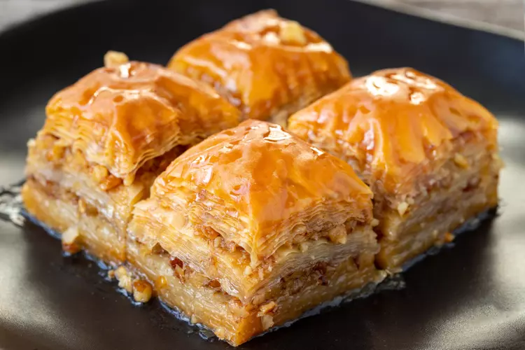

Baklava - Pâtisserie Grecque Traditionnelle
Ingrédients :
- 500 g de pâte filo
- 250 g de noix concassées (amandes, pistaches, noix)
- 150 g de beurre fondu
- 2 cuillères à soupe de sucre
- 1 cuillère à café de cannelle
- 200 g de miel
- 100 ml d’eau
- 1 cuillère à soupe de fleur d’oranger
- Jus d’un demi-citron
Instructions :
- 1. Préchauffer le four à 180°C.
- 2. Mélanger les noix concassées avec le sucre et la cannelle.
- 3. Beurrer un moule et étaler une première feuille de pâte filo.
- 4. Alterner couches de pâte filo et mélange de noix en badigeonnant de beurre.
- 5. Découper en petits carrés et enfourner pendant 30 minutes.
- 6. Pendant ce temps, faire chauffer le miel, l’eau, le citron et la fleur d’oranger.
- 7. Verser le sirop chaud sur le baklava dès la sortie du four.
- 8. Laisser refroidir et déguster !